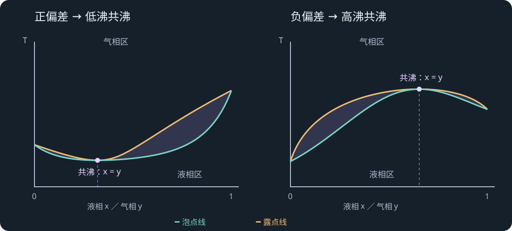

LECTURE 15 · PHASE DIAGRAMS II · 2026-11-03
真实溶液、共沸与液液相图
正负偏差 · 高低沸共沸物 · 水蒸气蒸馏 · 部分互溶与临界温度 · 相量计算
15.1 · COURSE NOTES
从 Raoult 定律到正、负偏差
上一讲由理想溶液建立气液平衡图，本讲讨论真实混合物、共沸、蒸汽蒸馏与液液分相。先统一记号：xᵢ 为某液相中的摩尔分数，yᵢ 为气相摩尔分数，zᵢ 为整个封闭样品的总组成；pᵢ* 是相同温度下纯组分的饱和蒸气压。图中摩尔分数、质量分数和总组成分别使用，读数前先看横轴。
上述形式采用低压下气相近似理想的修正 Raoult 模型。γᵢ=1 为理想情况，正偏差指分压或总压高于相应理想预测，负偏差则低于。微观上，异种分子相互作用相对较弱常使分子更易逸入气相，相对更强则常降低逸出倾向。
课件用苯—丙酮说明正偏差，用三氯甲烷—醚说明负偏差；更显著的示例有甲醇—三氯甲烷的总压极大、三氯甲烷—丙酮的总压极小。比较的基准是相同温度、相同组成的理想线，真实曲线是否形成极值还取决于偏差程度。
来源：PChem1_lec15 Phase Diagram2 20261103.pdf，PDF 第 1–2 页。
15.2 · COURSE NOTES
恒温 p–x 与恒压 T–x 为何反向弯曲
恒温下，混合物蒸气压越高，越容易达到给定外压；在恒定外压下，这类组成往往以较低温度开始沸腾。因此，总压出现极大的体系可在恒压温度图中出现沸点极小；总压极小则对应沸点极大。
| 真实溶液行为 | 恒温压力图 | 恒压温度图 | 典型结果 |
|---|---|---|---|
| 显著正偏差 | 总压极大 | 沸点极小 | 低沸共沸物 |
| 显著负偏差 | 总压极小 | 沸点极大 | 高沸共沸物 |
恒温压力图中，较高压力有利液相；恒压温度图中，较低温度有利液相。泡点线给出液体出现第一小泡气体的条件，露点线给出气体出现第一小滴液体的条件。两线围成的两相区用水平系线连接平衡的液相与气相组成。
普通组成下，气相相对富集局部更易挥发的组分；跨过共沸组成，哪一组分更容易富集可能改变。因此画蒸馏阶梯时，应从具体位置沿系线读气相，而不是预先认定整幅图中永远由同一个纯组分占优势。
来源：PChem1_lec15 Phase Diagram2 20261103.pdf，PDF 第 2–4 页。

15.3 · COURSE NOTES
共沸的条件：两相组成相同
共沸点（azeotrope）满足平衡气相与液相组成相同，即 xᵢ=yᵢ。对低压修正 Raoult 模型，两个组分都存在时有 γA pA*=γB pB*=p；相对挥发度达到 1，气化后不再富集某一组分。
在给定压力下，混合物可以保持组成不变地沸腾。共沸物由多种组分组成，其共沸组成会随压力变化。普通精馏在这一条件下失去进一步分离驱动力。
高沸共沸体系中，残留液体逐渐趋向最高沸点的共沸组成；在两侧起始时，馏出物则分别向相应较易挥发的纯组分方向富集。低沸共沸体系中，塔顶馏出物趋向最低沸点共沸组成，釜液向起始组成所在一侧的纯组分方向变化。记忆时分别标出“塔顶”和“残液”，两者的移动方向不同。
来源：PChem1_lec15 Phase Diagram2 20261103.pdf，PDF 第 3–4 页。
15.4 · COURSE NOTES
乙醇—水、高沸共沸与分离路线
课件列盐酸—水在约 1 atm 下，约 80 wt% 水、108.6 °C 的高沸共沸示例；乙醇—水则为约 4 wt% 水、约 78 °C 的低沸共沸示例。这里均为质量分数的近似数值，不能直接作为横轴的摩尔分数。乙醇共沸组成常粗略称约 96% 乙醇，精确数值需同时注明质量/体积口径与压力。
乙醇溶液经常压分馏趋近共沸后，可再采用分子筛等选择性脱水方法制无水乙醇。其他工艺也可能使用改变压力、加入夹带剂或萃取剂的方法，但选择取决于该体系的相图是否提供足够分离差异。
读取蒸馏阶梯：沿液相泡点曲线找到起始沸点，水平移至气相露点曲线得到蒸气组成；若蒸气完全冷凝，则得到同组成的下一批液体，再重复气化。逐步操作趋向的极限就是相图给出的共沸障碍。
来源：PChem1_lec15 Phase Diagram2 20261103.pdf，PDF 第 3–4 页。
15.5 · COURSE NOTES
互不相溶液体与水蒸气蒸馏
两种近乎不互溶的液体分别形成富 A 相和富 B 相。只要两液相都存在并充分接触达到平衡，各相内本组分活度接近纯液体，相应蒸气分压接近纯组分蒸气压。因此：
两个正分压相加可在比各纯液体正常沸点更低的温度达到外压，这是水蒸气蒸馏降低蒸馏温度的基础。它适用于与水难混溶、在操作温度有足够蒸气压且在相关条件下稳定的物质。课件溴苯示例：纯溴苯约 429 K，水 373.15 K，混合物约 368.15 K。
蒸馏期间，两液相的体积可以改变，但只要仍都存在，同一温度下各自的平衡分压近似不随总投料比例改变。一相完全耗尽后，沸腾条件会改变。充分接触、传热与气液传质有助于达到上述平衡；实际操作升温与沸腾速度还受装置条件影响。
来源：PChem1_lec15 Phase Diagram2 20261103.pdf，PDF 第 4–5 页。
15.6 · COURSE NOTES
馏出物质量比的推导
气相近似服从 Dalton 分压定律时，摩尔数之比等于分压之比。冷凝不发生物质损失时，凝液总体保存蒸气中组分数量，因此可以从分压换算馏出物质量比。
推导用 n=mM，把两个组分的摩尔质量同时带入。较大的 MB 可使蒸气中摩尔分数不高的 B 仍占有可观质量。温度必须取实际共沸温度，而非分别取 A、B 的纯物沸点。
补充算例：若操作温度下有机物分压 20 kPa、水分压 80 kPa，有机物摩尔质量 150 g·mol⁻¹，水为 18 g·mol⁻¹，则有机物与水的质量比为 20×15080×18≈2.08。这个比例描述该温度下平衡馏出组成；投料不足以维持两相时，后续馏分会改变。
来源：PChem1_lec15 Phase Diagram2 20261103.pdf，PDF 第 5；算例为笔记补充 页。
15.7 · COURSE NOTES
部分互溶：总体组成与两相端点
部分互溶体系在一定温度、总组成范围内分为两个液相。相界曲线称溶解度曲线或 binodal。给定温度画水平系线，两端是共存两液相的组成 xα、xβ；中间的总组成 z 只决定两相各有多少。
在恒压二元体系中 F′=C−P+1。单液相 P=1 时 F′=2，可在单相区独立选择温度与组成；两液相 P=2 时 F′=1，选温度后两相组成随相界固定。改变总组成 z 时，只要还处两相区，就主要改变两相数量。
这就是杠杆规则，某相的数量与对面那段系线长度成正比。横轴若为摩尔分数，结果为相的总摩尔数之比；横轴若为质量分数，才直接给质量比。系线端点对应两个富集相，不能把它们叫成纯 A 和纯 B。
来源：PChem1_lec15 Phase Diagram2 20261103.pdf，PDF 第 5–6 页。
15.8 · COURSE NOTES
正己烷—硝基苯例题重算
课件在 290 K 将 50 g 正己烷与 50 g 硝基苯混合，近似记为 0.59 mol 与 0.41 mol，总硝基苯摩尔分数 zN≈0.41。图上两液相端点为 xNα≈0.35、xNβ≈0.83，α 是正己烷富集相，β 是硝基苯富集相。
所以两相的摩尔数量约为 7:1，摩尔分数额分别为 0.875 和 0.125。它们并非 7:1 的质量比；将每相的平均摩尔质量带入才能换算质量。
用更精确摩尔质量 86.18、123.11 g·mol⁻¹，原料给 zN≈0.4118，相数量比约 6.77:1。这个小差异主要来自课件四舍五入；相图端点本身也只是读图近似。因此课件的 7:1 是与给定读数一致的复习答案。沿 zN≈0.41 的竖线加热，约 292 K 穿过相界后成为单相；这是该组成的澄清温度，体系的 UCST 位于整个穹顶的最高点。
来源：PChem1_lec15 Phase Diagram2 20261103.pdf，PDF 第 6 页。
15.9 · COURSE NOTES
上、下临界溶解温度与自由能
上临界溶解温度（UCST）是两液相共存区的最高温度；高于它，各组成均可形成单相。升温后混合熵的作用相对增强，体系更倾向均匀混合。课件还用 Pd/H 固溶体系说明类似相分离思想。
下临界溶解温度（LCST）是两相共存区的最低温度；低于它可均匀混合，升温破坏有利的缔合或溶剂化结构后反而分相。课件以三乙胺—水为例，并给出尼古丁—水同时具有下、上临界温度，约为 61 °C 与 210 °C，形成闭合互溶间隙。
用 G 对组成的曲线理解更稳妥：平衡两相的组成由公切线与曲线的两个切点决定，对应两相中每个组分的化学势分别相等。若连接两点的相分离状态使总 G 更低，均匀态就会分相。课件的双谷图表达这一趋势，精确组成仍应由公切线确定。临界点处两个共存组成合并。
课件穿插的固溶体图可分为置换型与间隙型：Cu–Ni 示例中一种原子替代晶格位置，Fe–C 示例中小原子进入间隙。相的判定取决于结构与组成是否属于同一均匀域。
来源：PChem1_lec15 Phase Diagram2 20261103.pdf，PDF 第 6–7 页。
15.10 · COURSE NOTES
部分互溶液体蒸馏的两种路径
若体系先超过 UCST、再达到沸点，则在沸腾前液体已经完全互溶。蒸气冷凝可先成为一个液相，继续降温进入液液两相区后才分层。这里必须把“冷凝”和“冷却后分层”按温度顺序区分。
另一种情况是在完全混溶前就沸腾，出现 Lα＋Lβ＋V 三相共存。二元体系恒压时 F′=2−3+1=0，因此三相共存的温度与三个相组成均被固定。继续供热可以改变相的数量，直到某相消失后路径进入另一个相区。
异相共沸时，蒸气冷凝后的总体组成可以与原两液相混合物的总体组成相同，但冷凝液本身分成两相。应把蒸气组成、凝液总组成和凝液两相端点分别标记。两个液相各自的组成通常与气相不同。
来源：PChem1_lec15 Phase Diagram2 20261103.pdf，PDF 第 8 页。
15.11 · COURSE NOTES
综合例题：加热与冷却的整条路径
课件从总组成 xB=0.95 的单液相开始加热：约 370 K 到泡点，最初蒸气组成 yB≈0.66；持续移去蒸气，釜液更富 B，最后趋向纯 B 并在约 392 K 蒸尽。所以这里的 370–392 K 是该蒸馏路径的温度范围。将最初蒸气单独收集后，冷凝样品的总体组成取 zB=0.66。
| 冷却状态 | 共存相组成 | 数量计算与解释 |
|---|---|---|
| 350 K，液＋气 | xB≈0.87，yB≈0.49 | nLnV=0.66−0.490.87−0.66≈0.810，即 1:1.235 |
| 340 K，三相共存 | xα≈0.30，xβ≈0.80，y=e | 只有温度和各相组成固定；还要知道一项相量才能确定全部数量 |
| 298 K，两液相 | xα≈0.20，xβ≈0.90 | nαnβ=0.90−0.660.66−0.20≈0.522，即 0.52:1 |
课件在 340 K 给出的 0.39:1 来自 0.80−0.660.66−0.30≈0.389。该计算适用于总体组成 0.66 已全部分配在两个液相中的情形，例如气相刚消失时的边界极限；若气相仍有有限数量，则液体子系统总组成尚需确定，不能直接把样品 zB 当作液体总组成。
三相数量有三个未知数，总量与一个组分守恒只提供两个独立方程，故还余一个相量自由参数。这与相律 F′=0 相容：相律统计的是平衡强度变量，而相量属于广度信息。这个区别是本讲综合题最关键的校订。
来源：PChem1_lec15 Phase Diagram2 20261103.pdf，PDF 第 9–10 页。
15.12 · COURSE NOTES
应试公式表与推导训练
| 任务 | 关系式 | 使用前检查 |
|---|---|---|
| 真实溶液分压 | pᵢ=xᵢγᵢpᵢ* | 同温度，低压模型，标准态一致 |
| 共沸 | xᵢ=yᵢ；α=1 | 同一组分的液气组成比较 |
| 蒸汽蒸馏 | p≈pA*＋pB* | 两液相存在并接近平衡 |
| 馏出质量比 | mBmA=pB*MBpA*MA | 取实际蒸馏温度 |
| 两相杠杆规则 | nαnβ=xβ−zz−xα | 端点同一系线，横轴为摩尔分数 |
| 恒压相律 | F′=C−P+1 | 约束独立，相数已确定 |
推导训练一：从组分守恒消去 nβ，得到 nα = n(xβ−z)xβ−xα，把两个商排成分式即可求各相比例。训练二：从分压与气相摩尔分数关系推导馏出质量比，写出摩尔质量出现的位置。训练三：从 xᵢ=yᵢ 代入修正 Raoult 定律，得到共沸时两个 γᵢpᵢ* 相等。
读图顺序固定为：坐标与给定约束→相区→水平系线端点→总组成位置→两相数量→沿路径检查何时有相出现或消失。只在真正的两相区使用两端点杠杆规则；到三相区先写全部物料守恒。全文新推导与数值复算为笔记补充，图示数据仍按课件近似读数保留。
来源：PChem1_lec15 Phase Diagram2 20261103.pdf，PDF 第 全讲 页。
两相数量式的展开推导
把 nβ=n−nα 代入组分守恒：nz=nαxα＋(n−nα)xβ，展开后为 nz=nxβ＋nα(xα−xβ)。移项使分子、分母都取正方向，得到 nα(xβ−xα)=n(xβ−z)。同理，nβ(xβ−xα)=n(z−xα)，两式相除即得课内杠杆关系。
边界检查能帮助排错：当 z 接近 xα，β 相数量趋零；当 z 接近 xβ，α 相数量趋零。若算出负相量，先检查点是否真在该系线两端之间，以及是否把某相组成当成了总组成。
共沸与三相恒温的区别
均相共沸的气液两相仍属二元两相体系，额外满足 x=y 的特征条件；异相共沸有两个液相和气相，恒压相律直接给 F′=0。前者可沿压力变化形成共沸组成轨迹，后者在固定压力下有三相共存温度。它们的“恒温沸腾”有相似外观，组成条件与相数不同。
沸腾过程中若不断取出蒸气，釜内总组成会随时间改变；若是封闭样品缓慢加热，总组成则固定。相图中的竖线表示固定总组成的条件路径，蒸馏时的釜液轨迹要沿对应液相边界跟踪。判断路径前把系统边界说清，可以避免把开口蒸馏和封闭加热混用。